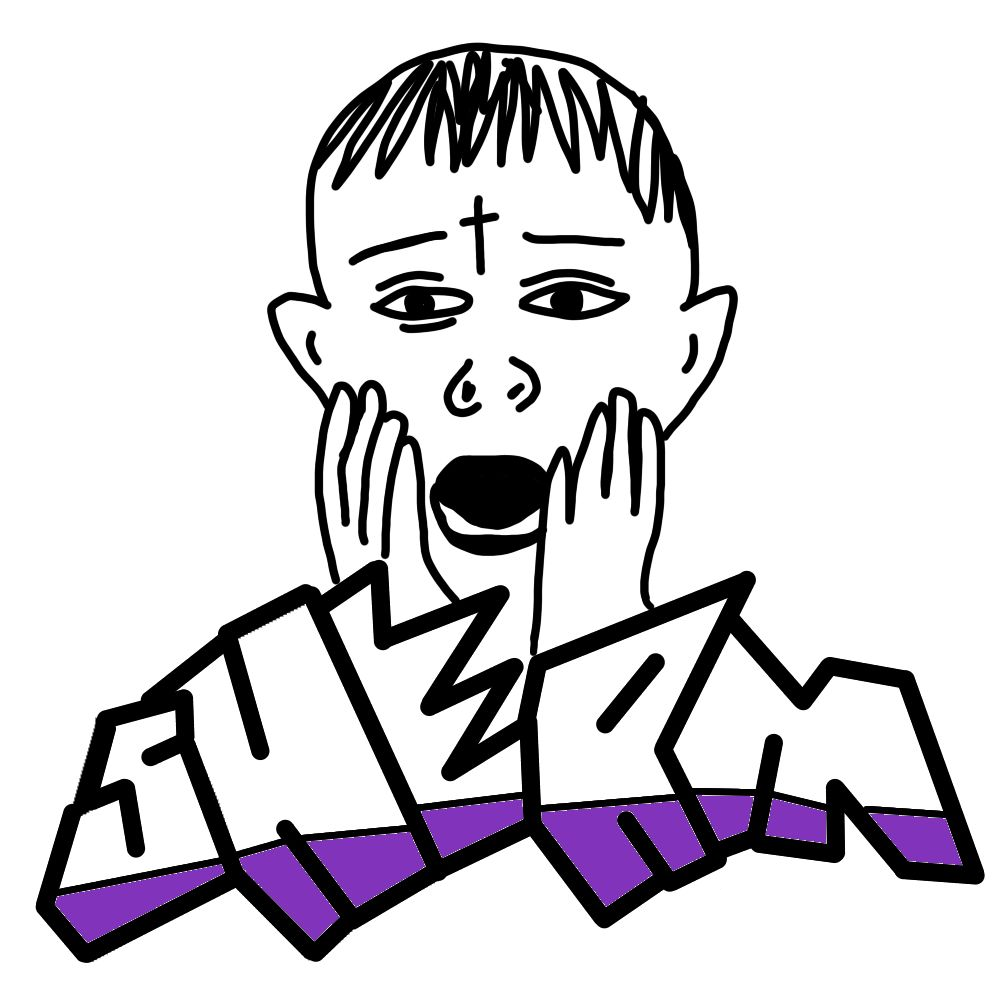

Check the extraction
Compare extracted passages with source PDF imagery before using them as evidence.

ShermLabs Memory GitHubRESEARCH SOFTWARE · PROTOTYPE
A workspace for organizing research papers, checking extracted text against the original PDF, and asking questions with quotations linked to their sources.
For readable text, choose ⚙ → Quality → 1080p60 and use fullscreen. Watch on YouTube
Compare extracted passages with source PDF imagery before using them as evidence.
Track source context and revisions so changes to the evidence remain reviewable.
Ask questions over selected evidence and inspect the source quotations used in an answer.
CURRENT SCOPE
This prototype uses keyword-based retrieval and AI-selected exact source quotations. The demo works with manually checked abstract passages, rather than full-paper analysis. Source matching does not establish scientific validity; outputs require researcher review.
Demo source: Shallcross et al. (2019), Frontiers in Behavioral Neuroscience, 13:91. CC BY 4.0. Excerpts are cropped/reformatted; AI output is shown separately.